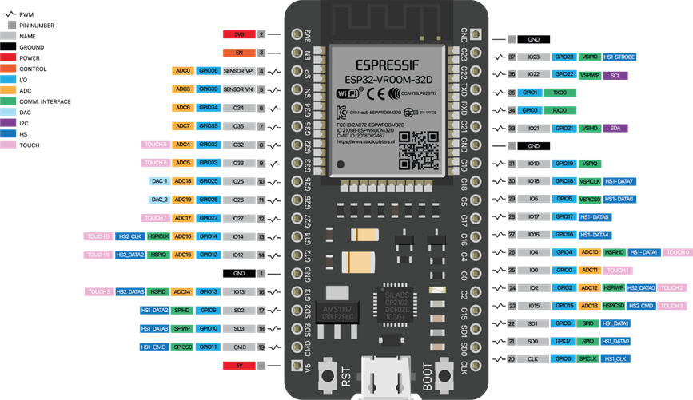

项目总结报告
1.场景分析
1.1拟解决的相关问题，以及问题提出的调查分析过程
技术实现难度：自动鱼苗养殖机需要集成水质监控、自动调节、饲喂管理等多项功能，这需要复杂的技术支持和精确的控制算法。此外，养殖机的设计和制造也需要考虑到鱼苗的生长习性、环境需求以及养殖场的实际条件。
环境稳定性问题：养殖环境对鱼苗的生长至关重要，包括水温、溶解氧、PH值等关键参数都需要保持稳定。然而，养殖场的网络条件可能不理想，如潮湿和多污染物等因素可能影响传输稳定性，导致智能化养殖系统失去与养殖设备之间的连接，进而影响整个生产效率。
数据隐私与安全性：智能化养殖系统需要采集和存储大量敏感数据，包括水质信息、鱼苗生长情况等。如何保护这些数据免受泄露和滥用，以及如何确保数据的质量和准确性，是一个需要解决的问题。
饲料投喂的精准度：根据鱼苗的生长阶段和健康状况自动调节饲料配方和喂食量，需要高精度的传感器和算法支持。如何确保投喂的精准度，以满足鱼苗的营养需求，同时避免浪费和污染，是一个技术挑战。
1.2对相关文献、产品、应用系统或使用者的调查研究
背景调查研究
随着人们对高品质水产品的需求增加，传统养殖方式可能已无法满足市场需求。特别是在某些优质鱼类的养殖上，市场价格较高。
我国是世界第一水产养殖大国，自1989年起，我国水产品产量跃居世界第一位，已经连续33年保持世界首位。2022年尽管受到疫情影响，海洋水产品需求日益增长，产量持续增加。2022年全国海洋水产品产量同比增长2.4%，水产品进口额同比增长40.6%。
近年来，我国水产苗种产值呈现不断增长的趋势。2022年水产苗种产值843.45亿元，同比增长13.5%。受日本核污水排放影响，2023年水产苗种市场规模将下降至809.6亿元。
数据来源：农业农村部渔业渔政管理局、由中商产业研究院整理
使用者的调查研究
养殖技术和管理问题
一些养殖户在养殖过程中缺乏科学的养殖技术和管理经验，可能导致鱼苗生长缓慢、死亡率高等问题。导致敌害生物和病源无法有效清除，从而影响鱼苗的生长和存活。此外，投喂饵料营养不全或投喂粗放，也可能影响鱼苗的健康和生长。
水质问题
水质是影响鱼苗养殖的关键因素之一。水体中营养物质过多可能导致水华、藻类大量繁殖，影响鱼苗的生长环境。同时，缺氧或低氧现象也是养殖中常见的问题，长期低氧的容易导致鱼苗发病死亡。此外，水黑、水臭等问题也可能出现，这通常与管理不善、水质恶化有关。
饲料和鱼苗质量问题
市场上存在一些不合格的饲料和鱼苗，给养殖户带来了一定的风险。不合格的饲料可能导致鱼苗营养不均衡，影响其生长速度和健康状况。而质量差的鱼苗则可能具有较高的死亡率，给养殖户带来经济损失。
疾病防控问题
鱼苗养殖容易受到各种疾病的侵袭，而防控这些疾病是保障鱼苗健康生长的重要一环。然而，一些养殖户在疾病防控方面存在不足，可能导致疾病的传播和流行，给养殖生产带来损失。
提出解决方案
在草鱼养殖产业中，养殖技术和管理问题、水质问题、鱼料成本、饲料和鱼苗质量、损耗率是养殖者面临的主要问题。本产品针对管理、损耗、水质这几个问题。
损耗：用设备代替人工投喂的方式提高投喂效率，利用设计精确地控制每次投喂的饲料量，减少饲料损耗和浪费，节约人工和鱼料成本，提高养殖效益。
管理：通过物联网技术将数据上传到云平台，并通过微信小程序实现远程控制。通过精细化管理，如定期监测水质、调整饲料配方、控制疾病发生等，可以显著提高养殖效益，增加产量。帮助养殖户及时发现并应对潜在的问题，如水质恶化、疾病爆发等，从而降低养殖风险，减少经济损失。
水质：对水质进行实时监测。通过测量水体的温度值与TDS值等让用户对水体情况有充分了解，可以及时了解水体环境的情况，发现潜在的问题，从而采取相应的措施来处理和改善水质，以满足鱼类的生长需求。
2.作品方案
2.1作品的主要创意
环境监控控制：鱼苗的生长受到水质、温度、光照等多种环境因素的影响。该设备能够检测环境相关信息，根据这些信息自动调节鱼苗的生长状态。例如，下雨自动打开挡板，温度过低自动加热，水质较差自动换水等。
自动喂食系统：本设备设计了一个能够定时、定量投放饲料的系统，以满足鱼苗不同生长阶段的营养需求。
数据监测与记录：养殖过程中需要持续监测和记录各种数据，如水的参数水质、水位和水温等，饲料投喂量和投喂频率等。这些数据对于优化养殖环境、提高养殖效率以及分析养殖问题具有重要意义。
远程管理：本系统可以通过微信小程序远程控制设备。微信小程序下达指令，通过物联网云平台的信息中转，将指令发送到设备，设备再进行对应操作。
友好的用户界面：该系统通过微信开发者工具开发设计了小程序界面设计。基于小程序即点即用的特点，用户在使用的时候也极为方便。小程序的控制界面采用了易于理解和操作的用户界面设计，方便用户查看养殖数据、调整养殖参数和接收预警信息。
智能语音助手：设备集成了智能语音助手功能，用户可以通过语音指令与养殖机进行交互，提高操作的便捷性和用户体验。
2.2作品设计思路和实现方案
设计思路
需求分析：
深入了解鱼苗的生长习性、环境需求以及养殖场的实际条件。
分析现有养殖技术和管理方式的优缺点，确定自动养殖机的功能需求和性能指标。
技术选型：
根据需求分析结果，选择适合的传感器、执行器、控制器等硬件设备。
选择稳定可靠的物联网平台和数据处理技术，实现数据的远程传输和处理。
模块化设计：
将自动养殖机划分为多个功能模块，如水质监测模块、投喂模块、测温模块等。
每个模块独立设计，方便后续的维护和升级。
人机交互设计：
设计友好的用户界面，方便用户查看养殖数据、调整参数和接收预警信息。
考虑提供智能语音助手功能，提高操作的便捷性。
实现方案
硬件搭建：
根据模块化设计思路，搭建各个功能模块所需的硬件设备。
集成水质传感器、投喂器、温控装置等关键设备，并进行必要的测试和调试。
软件开发：
开发数据采集、处理和控制的软件程序，实现自动养殖机的各项功能。
集成物联网平台，实现数据的远程传输和云端存储。
系统集成与测试：
将各个功能模块进行集成，形成完整的自动养殖机系统。
进行系统测试和性能优化，确保系统的稳定性和可靠性。
3.主要创新点
核心技术亮点 1
原创代码算法
1//从巴法云平台服务器获取数据2getData() {3 var that = this4 wx.request({5 url: 'https://api.bemfa.com/api/device/v1/data/1/get/',6 data: {7 uid: that.data.uid,8 topic: that.data.Datatopic,9 num: 110 },11 header: {12 'content-type': "application/x-www-form-urlencoded"13 },14 success(res) {15 console.log(res)16 if (res.data.msg.indexOf("#") != -1) {17 var all_data_arr = res.data.msg.split("#");//用"#"分隔数据，并存到数组里18 console.log(all_data_arr) /19 that.setData({20 temperature: all_data_arr[1], //温度21 level: all_data_arr[2], //水位22 quality: all_data_arr[3],//水质23 set_height: all_data_arr[10],//设置高度24 set_temperature: all_data_arr[11],//设置温度阈值25 set_level: all_data_arr[12],//设置水位阈值26 set_quality: all_data_arr[13],//设置水质阈值27 set_food: all_data_arr[14],//设置投喂时长28 set_time: all_data_arr[15],//设置定时投喂时间29 dataTime: res.data.time//数据上传时间30 })31 // 阳光状态显示32 if (all_data_arr[4] != undefined) {33 if (all_data_arr[4] == "1") {34 that.setData({35 sunStatus: "有",36 })37 } else {38 that.setData({39 sunStatus: "无",40 })41 }42 }43 // 雨水状态显示44 if (all_data_arr[5] != undefined) {45 if (all_data_arr[5] == "1") {46 that.setData({47 rainStatus: "有",48 })49 } else {50 that.setData({51 rainStatus: "无",52 })53 }54 }55 // 挡板状态显示56 if (all_data_arr[6] != undefined) {57 if (all_data_arr[6] == "1") {58 that.setData({59 shieldStatus: "打开",60 })61 } else {62 that.setData({63 shieldStatus: "关闭",64 })65 }66 }67 //水泵状态显示68 if (all_data_arr[7] != undefined) {69 if (all_data_arr[7] == "1") {70 that.setData({71 pumpStatus: "打开",72 })73 } else {74 that.setData({75 pumpStatus: "关闭",76 })77 }78 }79 //风扇状态显示80 if (all_data_arr[8] != undefined) {81 if (all_data_arr[8] == "1") {82 that.setData({83 fanStatus: "打开",84 })85 } else {86 that.setData({87 fanStatus: "关闭",88 })89 }90 }91 //加热器状态显示92 if (all_data_arr[9] != undefined) {93 if (all_data_arr[9] == "1") {94 that.setData({95 heaterStatus: "打开",96 })97 } else {98 that.setData({99 heaterStatus: "关闭",100 })101 }102 }103 // 温度异常警告104 if (all_data_arr[1] <= that.data.set_temperature) {105 wx.showToast({106 title: '请注意！当前温度低于设定的 ' + that.data.set_temperature + ' ℃',107 icon: 'none',108 duration: 2000109 })110 }111 // 水位异常警告112 if (all_data_arr[2] <= that.data.set_level) {113 wx.showToast({114 title: '请注意!当前水位低于设定的 ' + that.data.set_level + ' CM',115 icon: 'none',116 duration: 2000117 })118 }119 // 水质异常警告120 if (all_data_arr[3] >= that.data.set_quality) {121 wx.showToast({122 title: '请注意!当前水质差于设定的 ' + that.data.set_quality + ' ppm',123 icon: 'none',124 duration: 2000125 })126 }127 }128 }129 })130},重点分析
该项目通过getData()这个函数读取到存储到巴法云平台的数据，并将数据存储到JavaScript的数组当中。通过对数组中的数值进行判断更改小程序页面的数据显示。
这个函数的技术重点是通过巴法云平台提供的API进行数据访问。而在微信小程序中，网络请求需要使用wx.request函数。
wx.request是微信小程序提供的一个基于Promise封装的网络请求API。它允许开发者使用GET或POST方法发起网络请求，并可以设置请求头、请求参数等相关信息。通过wx.request函数，开发者可以方便地在小程序中与服务器进行数据交互。
在使用wx.request时，需要在需要发起请求的页面或组件的js文件中引入该方法。然后，可以通过调用wx.request函数并传入一个包含url、method、data等属性的对象来发起请求。其中，url指定了请求的URL地址，method指定了请求的方法（如GET或POST），data则包含了请求的参数。
此外，wx.request还提供了成功回调函数和失败回调函数，用于处理请求成功或失败的情况。成功回调函数会在请求成功时被调用，并接收一个包含响应数据的对象作为参数。失败回调函数则会在请求失败时被调用，并接收一个表示请求失败原因的对象作为参数。
在本项目中
url是 ”https://api.bemfa.com/api/device/v1/data/1/get/“
method未设置，默认是GET方法
data则是 {
uid: that.data.uid,
topic: that.data.Datatopic,
num: 1
}
xxxxxxxxxx131wx.request({2 url: 'https://api.bemfa.com/api/device/v1/data/1/get/', //访问网页路径3 data: {4 uid: that.data.uid, //参数uid是巴法云提供的用户密钥5 topic: that.data.Datatopic, //topic是用户在巴法云平台创建的主题6 num: 1 //num是创建主题的序号7 },8 header: { //header是发送的TCP头信息9 'content-type': "application/x-www-form-urlencoded"10 },11 success(res) { //访问成功返回数据12 console.log(res)} //在控制台输出返回的数据13})通过wx.request()这样一个函数就可以读取到用户在巴法云平台创建的主题的消息，进而存储到数组中，方便后续使用。
核心技术亮点 2
原创代码算法
x1void pwm_init(unsigned char pin, unsigned char chanel, unsigned char freq, unsigned char resolution) {2 ledcSetup(chanel, freq, resolution); 3 ledcAttachPin(pin, chanel); 4}5
6void pwm_set_duty(unsigned char chanel, unsigned int duty) {7 ledcWrite(chanel, duty); 8}9
10int servo_ctrl(unsigned char degree) {11 const float deadZone = 6.4; 12 const float max = 32; 13 if (degree < 0) degree = 0;14 else if (degree > 180) degree = 180;15 return (int)(((max - deadZone) / 180) * degree + deadZone);16}17
18void servo_init() {19 pwm_init(SERVO, 7, 50, 8);20 pwm_set_duty(7, servo_ctrl(0));21}
重点分析
这段代码是用于初始化PWM（脉宽调制）输出和舵机控制。
PWM初始化
xxxxxxxxxx41void pwm_init(unsigned char pin, unsigned char chanel, unsigned char freq, unsigned char resolution) { 2 ledcSetup(chanel, freq, resolution); // PWM初始化 3 ledcAttachPin(pin, chanel); // 绑定PWM通道到GPIO上 4}pwm_init函数接受四个参数：pin（GPIO引脚号）、chanel（PWM通道号）、freq（PWM频率）和resolution（PWM占空比的分辨率）。ledcSetup函数用于初始化PWM通道，设置其频率和分辨率。ledcAttachPin函数将PWM通道绑定到指定的GPIO引脚上。
PWM占空比设置
xxxxxxxxxx31void pwm_set_duty(unsigned char chanel, unsigned int duty) { 2 ledcWrite(chanel, duty); // 改变PWM的占空比 3}pwm_set_duty函数用于设置指定PWM通道的占空比。ledcWrite函数设置PWM通道的占空比。
舵机控制
xxxxxxxxxx71int servo_ctrl(unsigned char degree) { 2 const float deadZone = 6.4; //对应0.5ms(0.5/(20ms/256)) 3 const float max = 32; //对应2.5ms 4 if (degree < 0) degree = 0; 5 else if (degree > 180) degree = 180; 6 return (int)(((max - deadZone) / 180) * degree + deadZone); 7}servo_ctrl函数接受一个角度值（degree），并计算对应的PWM占空比，用于控制舵机。deadZone：这是一个常数，代表舵机在0度位置时PWM的占空比。注释说明这个值对应0.5ms的脉冲宽度，这个宽度是基于一个20ms的PWM周期（20ms被分为256个单位，即每个单位约等于0.078ms）。max：这是舵机在最大角度位置时PWM的占空比。注释说明这个值对应2.5ms的脉冲宽度。函数首先检查输入的角度
degree是否小于0或大于180。如果是，它将被限制在0到180的范围内，因为舵机的标准工作范围通常是0到180度。线性插值
(max - deadZone) / 180计算的是从deadZone到max之间每度对应的PWM单位数。((max - deadZone) / 180) * degree计算的是输入角度degree对应的PWM单位数。((max - deadZone) / 180) * degree + deadZone计算出的是考虑了deadZone偏移后的PWM占空比值。最后，通过
return (int)将计算出的浮点数转换为整数，这是因为PWM占空比通常是以整数形式设置的。
舵机初始化
xxxxxxxxxx41void servo_init() { 2 pwm_init(SERVO, 7, 50, 8); 3 pwm_set_duty(7, servo_ctrl(0)); 4}servo_init函数用于初始化舵机控制。使用
pwm_init函数初始化PWM通道，并绑定到SERVO引脚。使用
pwm_set_duty函数设置PWM占空比，使得舵机处于初始位置（0度）。
代码中的SERVO是一个已经定义的GPIO引脚号。
这段代码是控制舵机的基础框架，可以通过调用servo_ctrl函数并传入不同的角度值来控制舵机的转动。这也是本项目控制投喂模块的基础
4.作品实现过程
发现问题
应选择什么样的物联网架构？
系统组成是什么样的？应该具有哪些功能？
硬件主控芯片和功能模块应该如何选择？
现在有很多物联网云平台，对于该项目应该选择那个云平台？
为了实现设想的功能，软件应该有哪些功能？
搭载硬件系统的物理模型应如何制作？如何选材？
解决问题
选择物联网架构以及系统组成分析
物联网系统架构
该系统采用物联网技术中常用的体系架构层——感知层、网络层和应用层。
感知层
物联网感知层是物联网层次结构中的最底层，其作用主要是负责物联网信息的收集和获取。通过传感网络获取环境信息，实现对物理世界的智能感知识别、信息的采集处理以及设备的自动控制。
网络层
物联网网络层的主要作用是进行信息的传送。具体来说，它负责将感知层采集到的信息传递给物联网云平台，同时还将物联网云平台下发的命令传递给应用层。网络层通过物联网、互联网和移动通信网络进行大量信息的传输，从而确保信息的流通和交互。
应用层
物联网应用层的作用主要体现在对感知层采集到的数据进行计算、处理和知识挖掘，从而实现对物理世界的实时控制、精确管理和科学决策。应用层是物联网的智能中枢，它完成海量数据的分析处理，并做出正确的控制和决策，实现智能化的管理、应用和服务。
系统组成简图
硬件选型
主控芯片
ESP32介绍
ESP32是一种由乐鑫科技（Espressif Systems）开发的微控制器，它是ESP8266的升级版，拥有更高的性能和更多的功能。这款微控制器特别适用于物联网、嵌入式系统、智能家居、车载设备、安防设备等领域。
ESP32的核心特性包括：
高性能：拥有240MHz的双核处理器、520KB的RAM和4MB的闪存，可同时运行多个任务，提高了性能和效率。
低功耗：设计考虑了低功耗需求，拥有多种省电模式，最低功耗仅为5μA，非常适合电池供电的应用。
无线通信：内置WiFi和蓝牙4.2模块，可进行无线通信，适用于连接互联网和其他设备的应用。
丰富的外设：拥有34个GPIO口，具有丰富的输入输出引脚和各种外设，包括GPIO、UART、SPI、I2C等，适用于各种传感器和设备的连接。
开源：开发环境和文档都是开源的，这使得开发者可以轻松地使用它来创建各种物联网和嵌入式应用。
安全性：支持加密和数字签名等安全特性。

信息采集模块
温度传感器
DS18B20的工作原理主要基于半导体器件的电阻值随温度变化这一特性。DS18B20内部包含一个温度传感器、一个模数转换器以及一个存储器。当温度传感器感知到环境温度时，它会将温度转换为与之对应的模拟信号。随后，模数转换器将这个模拟信号转换为数字信号，即数字代码，这些数字代码代表了当前的温度值。
光照传感器
光照传感器的工作原理主要基于光敏元件对光的响应。这些光敏元件，如光敏电阻能够感知环境光线的变化，并将其转换为电信号。光敏电阻工作原理是：当光照增强时，光敏电阻内部的半导体材料受到光照激发，电子在材料中移动，导致电阻值降低；而当光照减弱时，电阻值则增加。这种电阻值的变化与光照强度直接相关。然后，信号处理电路接收来自光敏元件的电信号，并将其转换为与光强度相关的输出信号。通过测量这个输出信号的变化，我们就可以获得环境中的光照强度信息。
雨水传感器
雨水传感器的工作原理主要依赖于其内部的感应元件来检测雨水的存在和强度。当雨滴接触到传感器表面时，会导致电流的流动，从而改变传感器的电导率。通过测量电导率的变化，传感器可以判断是否有雨水降落。
距离传感器
超声波传感器的工作原理主要是基于超声波信号的发射与接收。传感器内部的压电晶片在电压的激励下发生振动，进而产生超声波，并向外发射。当超声波在传播过程中遇到障碍物时，会发生反射，反射回来的超声波被传感器接收并转换为电信号。通过对电信号的处理和分析，可以获取与障碍物的距离。
水质传感器
TDS水质传感器的工作原理主要基于测量水中溶解物质的电导率来推算出TDS（总溶解固体）的含量。TDS水质传感器通过测量水的电导率，并利用特定的算法和计算过程，最终得出水中的TDS含量。这种传感器具有体积小、操作简单、实时监测等特点，广泛应用于水质监测、环境保护等领域。在进行TDS测量时，传感器通常还会进行温度补偿，以确保测量结果的准确性。
数据显示模块
LCD1602液晶显示屏
LCD1602液晶显示屏的工作原理主要基于液晶分子的电光效应。LCD1602液晶显示屏由两块平行排列的玻璃基板组成，中间夹有液晶材料。液晶材料是一种具有晶体特性的有机化合物，但在没有外界电场作用时，液晶分子呈现混乱无序的状态，无法透过光线，因此显示屏是不透明的。
当电压施加到液晶屏的液晶分子上时，液晶分子会发生定向排列，形成特定的结构，允许光线通过。通过控制施加到每个像素点上的电压，可以改变液晶分子排列的方向，从而控制光的透过与遮挡，进而显示出不同的图像和文字。
功能控制模块
舵机
舵机的工作原理主要基于接收控制信号来实现精确的角度控制。其内部结构和控制机制使得舵机能够解析控制信号的脉冲宽度或模拟电压，并将其转换为特定的角度位置。舵机通常由以下几个主要部分组成：舵盘、减速齿轮组、位置反馈电位计、直流电机以及控制电路板。当控制电路板接收到来自信号线的控制信号时，它会根据信号的特性（如脉宽或模拟电压）来控制直流电机的转动。电机通过一系列齿轮组减速后，将动力传动至输出舵盘，使舵盘转动到指定的角度位置。
控制信号通常采用脉宽调制（PWM）方式实现。PWM信号通过改变脉冲宽度来表示不同的角度位置。标准的PWM信号周期为20ms，其中高电平的脉冲宽度在0.5ms到2.5ms之间，对应舵机的角度范围通常为0°到180°。舵机接收到这样的控制信号后，会解析脉冲宽度，并据此转动到相应的角度。
| 脉冲 | 转动角度 |
|---|---|
| 0.5ms | 0度 |
| 1.0ms | 45度 |
| 1.5ms | 90度 |
| 2.5ms | 180度 |

步进电机
步进电机，也称为电脉冲马达，是一种将电脉冲信号转换为机械角位移的执行元件。步进电机的工作原理基于电脉冲与机械运动之间的直接转换，通过精确控制输入的电脉冲信号，可以实现精确的位置、速度和方向控制。每当电机绕组接受一个电脉冲，转子就会转过一个相应的步距角。转子的角位移的大小以及转速分别与输入的电脉冲数及其频率成正比，并在时间上与输入脉冲同步。通过控制输入电脉冲的数量、频率以及电机绕组通电相序，可以精确地获得所需的转角、转速及转向。
继电器
继电器的工作原理主要基于电磁效应，利用电磁铁在通电后产生的磁力来控制机械触点的通断，从而实现对电路的控制。继电器通常由铁芯、线圈、衔铁、回位弹簧和触点等部分组成。当继电器线圈通电时，线圈中产生电流，进而产生磁场。这个磁场会吸引衔铁，使衔铁与铁芯紧密贴合。此时，衔铁上的触点会与固定触点接触，从而闭合或断开电路。当线圈断电时，磁场消失，衔铁在回位弹簧的作用下返回到初始位置，触点也随之分离，电路断开。
蜂鸣器
蜂鸣器的工作原理基于压电效应。对于压电蜂鸣器，它利用压电效应产生声音。内部通常包含一个压电陶瓷晶体。当外加电压施加到压电晶体上时，晶体就会产生机械振动，这种振动通过蜂鸣器的共振腔体放大并发出声音。
语音控制
语音控制模块的原理是基于声音信号的采集、处理、特征提取、语音识别以及指令解析和执行等环节，通过智能算法和模式匹配技术，实现用户与设备或系统之间的语音交互和控制。通常有以下几个步骤：声音信号的采集、信号转换与处理、特征提取、语音识别、指令解析与执行、反馈与交互。
硬件系统设计
硬件系统引脚连接表
| 硬件 | 引脚 |
|---|---|
| 蜂鸣器 | GPIO26 |
| 光照传感器 | GPIO39 |
| 雨水传感器 | GPIO34 |
| 风扇控制继电器 | GPIO19 |
| 水泵控制继电器 | GPIO18 |
| 加热器控制继电器 | GPIO0 |
| 舵机 | GPIO16 |
| TDS水质传感器 | GPIO33 |
| 超声波测距传感器发送端 | GPIO2 |
| 超声波测距传感器接收端 | GPIO15 |
| DS18B20温度传感器 | GPIO17 |
| 步进电机输入1 | GPIO27 |
| 步进电机输入2 | GPIO14 |
| 步进电机输入3 | GPIO12 |
| 步进电机输入4 | GPIO13 |
云平台选择
采用巴法云云平台作为平台层，巴法云物联网平台是一个集物联网云端、智能终端和APP于一体的全链条物联网解决方案。该平台致力于实现设备互联、数据共享和智能控制，帮助用户轻松构建属于自己的物联网系统。它是物联网中间件，承载着项目的大量数据，并进行存储、检索、管理、实时分析处理等功能。主要负责接收从设备端上报的各类环境信息，做数据存储及数据中转，并且根据用户设定的控制逻辑下发控制指令给设备端。
在本项目中，利用巴法云平台存储由下位机ESP32通过传感器采集的相关数据。下位机ESP32传感器采集的数据通过TCP协议上传到云平台。上位机微信小程序通过TCP协议读取到存储在云平台的数据，并在前端进行数据展示。
软件需求分析
软件开发
微信小程序
微信小程序的功能界面分为五大部分，如下：
设备状态
该部分展示光照、雨水、挡板、风扇、水泵、加热器、设备离线或在线的状态。界面如下：
数据显示
该部分展示水温，水位和水质的数值。界面如下：

远程控制
该部分用于下达对设备的控制指令：打开或关闭挡板、打开或关闭水泵、打开或关闭风扇、打开或关闭加热器、投料一次等界面如下：
参数设置
该部分用于设置参数。能设置的参数有：养殖池高度、自动加热时的最低温度、换水时预留最低水位、打开水泵的最低水质、单次投喂时长和投喂间隔时间。
结构模型制作
数字建模
渲染图
立体图
正视图
俯视图
侧视图
实物模型

迭代更新
物理模型
在项目初期，设备只是运行在面包板上，没有物理模型外壳。方便调试但是不利于项目功能展示。于是我们在产品包装上进行了迭代更新：对裸露的电路板设计了外观。首先在建模软件Fusion360 上针对项目要实现的功能进行数字建模，数字建模完毕后再基于数字建模示意图制作实物模型。
结构优化
在项目初期，运行在面包板上的设备通过杜邦线连接，比较杂乱。并且各个模块也没有进行分类。只是实现了模块驱动，但是没有实现系统功能。而在项目后期，我们基于制作的模型对主控芯片和功能模块的空间结构进行了优化，合理的利用模型内有限的空间。
功能拓展
在项目初期，系统并没有语音控制功能。部分控制指令是由按钮下达。这种方式在实际应用中有诸多不便。于是在项目后期，我们加入了语音控制功能，实现本地模式与物联网模式的切换，以及温湿度播报等功能。
5.作品成果
外观图片


功能介绍
系统功能简图
系统功能简介
环境监控控制：鱼苗的生长受到水质、温度、光照等多种环境因素的影响。该设备能够检测环境相关信息，根据这些信息自动调节鱼苗的生长状态。例如，下雨自动打开挡板，温度过低自动加热，水质较差自动换水等。
自动喂食系统：本设备设计了一个能够定时、定量投放饲料的系统，以满足鱼苗不同生长阶段的营养需求。
数据监测与记录：养殖过程中需要持续监测和记录各种数据，如水的参数水质、水位和水温等，饲料投喂量和投喂频率等。这些数据对于优化养殖环境、提高养殖效率以及分析养殖问题具有重要意义。
远程管理：本系统可以通过微信小程序远程控制设备。微信小程序下达指令，通过物联网云平台的信息中转，将指令发送到设备，设备再进行对应操作。
友好的用户界面：该系统通过微信开发者工具开发设计了小程序界面设计。基于小程序即点即用的特点，用户在使用的时候也极为方便。小程序的控制界面采用了易于理解和操作的用户界面设计，方便用户查看养殖数据、调整养殖参数和接收预警信息。
智能语音助手：设备集成了智能语音助手功能，用户可以通过语音指令与养殖机进行交互，提高操作的便捷性和用户体验。
6.作品测试情况
经过对作品的深入技术测评，现将该设备的技术特点、性能表现及存在的问题进行如下总结：
技术特点
高度自动化：自动鱼苗养殖机采用了先进的自动化技术，能够自动完成水质监测、饲料投喂、水温控制等一系列操作，大大降低了人工干预的需求，提高了养殖效率。
精准环境调控：设备通过集成传感器和控制系统，可以实时监测和调整养殖环境，如水温、浑浊度等，确保鱼苗始终处于最适生长状态。
智能数据管理：该养殖机具备智能数据记录和分析功能，能够实时收集并处理养殖过程中的数据，为养殖人员提供决策支持，优化养殖策略。
远程控制：该养殖机可通过小程序进行远程控制，能够在有网络的地方随意控制设备，方便养殖人员进行远程监管。
性能表现
养殖效率显著提升：通过自动化养殖，自动鱼苗养殖机大大提高了鱼苗的生长速度和成活率，缩短了养殖周期，提高了经济效益。
稳定性良好：设备在长时间运行过程中表现稳定，故障率较低，能够确保养殖的连续性和稳定性。
操作简便：小程序界面设计直观，操作简单易懂，即使对于非专业人员也能够快速上手。
存在问题
设备成本较高：相比传统养殖方式，自动鱼苗养殖机的初始投资成本较高，对于一些小型养殖户来说可能存在一定的经济压力。
技术更新迅速：随着科技的不断发展，自动鱼苗养殖机的技术也在不断更新换代，用户需要保持对新技术的学习和掌握，以适应市场变化。
售后服务依赖性强：由于设备技术含量较高，一旦出现技术故障或问题，用户往往需要售后服务来解决。
综上所述，自动鱼苗养殖机在技术上具有较高的自动化程度、精准的环境调控能力和智能的数据管理功能，显著提升了养殖效率。然而，设备成本较高、技术更新迅速以及售后服务依赖性强等问题也需要在使用过程中予以关注。
7.总结与展望
研究的成果和不足之处
首先，技术研发是一个重要的问题。虽然当前的技术水平已经可以实现一些基本的自动化功能，但要设计出一款高效、稳定、易用的自动鱼苗养殖机，还需要克服许多技术难题。例如，如何精确控制养殖环境（如水温、水质、光照等），以确保鱼苗的健康成长，提高养殖效率。
其次，成本控制也是一个不容忽视的问题。自动鱼苗养殖机的研发、制造、安装和后期维护都需要投入大量的资金。如何在保证设备性能和质量的前提下，降低生产成本，提高性价比，是需要仔细考虑的问题。
最后，运营维护也是一个需要考虑的问题。自动鱼苗养殖机在长期使用过程中，可能会出现故障或需要定期维护。如何提供及时、有效的售后服务，确保设备的正常运行，是制造商和养殖户共同关注的问题。
对未来的改进和发展
首先，针对技术研发，学习多方面的知识，不只是学习嵌入式、物联网和小程序等相关技术，还要学习包括水产养殖，市场经济相关知识。此外，关注行业动态和前沿技术，及时引入新技术和新方法，提升设备的性能和智能化水平。
其次，为了控制成本，可以进行详细的成本分析和预算规划，找出成本高的环节并寻求优化方案。例如，采用性价比高的材料和零部件，优化生产工艺，降低制造成本。同时，考虑设备的可维护性和耐用性，减少后期维护成本。
最后，对于运营维护问题，可以建立完善的售后服务体系，提供及时的技术支持和维修服务。对设备进行定期巡检和维护，确保设备的正常运行。
8.团队成员介绍和工作分工说明
负责人
是项目初始想法的提出者，主要负责ESP32及其各种功能模块的驱动代码编写、微信小程序JavaScript脚本部分的软件代码编写、硬件ESP32及其相关模块功能调试和微信小程序软件部分的联合调试。此外，还参与项目硬件实物介绍，主要任务是对设备功能进行演示和介绍。
成员一
主要负责针对项目所需要实现的功能进行物理模型设计与制作。同时参与了部分硬件的功能测试以及硬件实物与物理模型之间的安装。
成员二
主要负责软件开发的功能需求分析、微信小程序软件辅助开发负责wxml和wxss部分的代码编写以及微信小程序功能测试。另外还负责项目所使用到的传感器的采购与选型。
成员三
主要负责如项目背景、用户需求、市场前景等方面的资料查找、相关信息整合与加工以及项目文档编写等文字处理工作。
成员四
主要负责录制项目实物介绍的视频及其视频素材的后期剪辑。
9.附录
项目程序代码
ESP32代码
xxxxxxxxxx7251//基础库2//单总线库3//I2C通信的液晶屏库4//超声波测距库5//温度库6//TDS水质传感器7//ESP32WIFI库8
9
10//巴法云服务器地址默认即可11//服务器端口//TCP创客云端口8344//TCP设备云端口834013
15
16//WIFI名称，区分大小写17//WIFI密码19//用户私钥21String UID = "60ce8437cee20782e7355a16e6bb6a39";22//主题名字23String TOPIC = "Data"; //用于传输数据的主题24
25//主题名字26String TOPIC2 = "Status"; //用于下达控制命令的主题27
28
30
31//最大字节数32
34//tcp客户端相关初始化，默认即可35WiFiClient TCPclient;36String TcpClient_Buff = "";37unsigned int TcpClient_BuffIndex = 0;38unsigned long TcpClient_preTick = 0;39unsigned long preHeartTick = 0; //心跳40unsigned long preTCPStartTick = 0; //连接41bool preTCPConnected = false;42
43
44//相关函数初始化45//连接WIFI46void doWiFiTick();47void startSTA();48
49//TCP初始化连接50void doTCPClientTick();51void startTCPClient();52void sendtoTCPServer(String p);53
54
55//蜂鸣器引脚定义56//光照传感器引脚定义57//雨水传感器引脚定义58//继电器1引脚定义59//继电器2引脚定义60//继电器3引脚定义61//舵机引脚定义62//水质传感器引脚定义63
64//超声波测距传感器发送端引脚定义65//超声波测距传感器接收端引脚定义66
67//温度传感器引脚定义68
69//步进电机输入1引脚定义70//步进电机输入2引脚定义71//步进电机输入3引脚定义72//步进电机输入4引脚定义73
74//按键1引脚定义75//按键1引脚定义76//按键1引脚定义77//按键1引脚定义78
79
80
81//定义步进电机转动圈数82
83
84// 定义步进电机速度，值越小，速度越快85// 最小不能小于186
89
90LiquidCrystal_I2C lcd(0x27, 16, 2); //I2C定义液晶显示屏91
92AfstandsSensor afstandssensor(TRIG, ECHO); //创建超声波测距模块的实例对象93
94OneWire oneWire(DS18B20); //创建单总线的实例对象，用于温度传感器读取温度数据95DallasTemperature sensors(&oneWire); //创建ds18b20的实例对象96
97CQRobotTDS tds(WATER); //创建水质传感器的实例对象98
99
100float set_height = 100; //设置高度初值cm101float set_temperature = 10; //设置温度阈值℃102float set_level = 25; //设置水位阈值cm103unsigned int set_quality = 2000; //设置水质阈值%104unsigned int set_food = 1000; //设置单次投喂时长ms105unsigned int set_time = 1; //设置定投喂时间min106
107unsigned char pumpstatus = 0; //水泵状态108unsigned char fanstatus = 0; //风扇状态109unsigned char heaterstatus = 0; //加热器状态110unsigned char ldrStatus = 0; //阳光状态111unsigned char rainStatus = 0; //雨水状态112unsigned char shiled = 0; //挡板状态113float water_level = 0; //水位114float temp = 0; //温度115unsigned int water_quality = 0; //水质116bool iot_mode = false; //物联网模式117
118//蜂鸣器初始化119void Buzzer_init() {120 pinMode(FM, OUTPUT);121 digitalWrite(FM, LOW);122}123
124//蜂鸣器驱动125void Buzzer() {126 for (int i = 0; i < 5000; i++) {127 delayMicroseconds(250);128 digitalWrite(FM, HIGH);129 delayMicroseconds(250);130 digitalWrite(FM, LOW);131 }132}133
134//光照传感器初始化135void ldr_init() {136 pinMode(LDR, INPUT);137}138//获取光照传感器状态139int ldr_status() {140 return !digitalRead(LDR);141}142//雨水传感器初始化143void rain_init() {144 pinMode(RAIN, INPUT);145}146//获取雨水传感器状态147int rain_status() {148 return !digitalRead(RAIN);149}150//水质传感器初始化151void water_init() {152 pinMode(WATER, INPUT);153}154//获取水质数据155unsigned int water_value(float temp) {156 return tds.update(temp);157}158//继电器初始化159void ralay_init() {160 pinMode(RELAY1, OUTPUT);161 digitalWrite(RELAY1, LOW);162 pinMode(RELAY2, OUTPUT);163 digitalWrite(RELAY2, LOW);164 pinMode(RELAY3, OUTPUT);165 digitalWrite(RELAY3, LOW);166}167//水泵驱动168void pump(unsigned char relay_status) {169 if (relay_status == 1) {170 digitalWrite(RELAY1, HIGH);171 pumpstatus = 1;172 } else {173 digitalWrite(RELAY1, LOW);174 pumpstatus = 0;175 }176}177//风扇驱动178void fan(unsigned char relay_status) {179 if (relay_status == 1) {180 digitalWrite(RELAY2, HIGH);181 fanstatus = 1;182 } else {183 digitalWrite(RELAY2, LOW);184 fanstatus = 0;185 }186}187//加热器驱动188void heater(unsigned char relay_status) {189 if (relay_status == 1) {190 digitalWrite(RELAY3, HIGH);191 heaterstatus = 1;192 } else {193 digitalWrite(RELAY3, LOW);194 heaterstatus = 0;195 }196}197
198unsigned char g_dir = 0; //默认逆时针方向199unsigned char g_speed = STEPMOTOR_MAXSPEED; //默认最大速度旋转200unsigned int g_step = 0;201//步进电机初始化202void step_motor_init(void) {203 pinMode(ina_pin, OUTPUT);204 pinMode(inb_pin, OUTPUT);205 pinMode(inc_pin, OUTPUT);206 pinMode(ind_pin, OUTPUT);207}208
209
210
211/*******************************************************************************212* 函 数 名 : step_motor_28BYJ48_send_pulse213* 函数功能 : 输出一个数据给ULN2003从而实现向步进电机发送一个脉冲214* 输 入 : step：指定步进序号，可选值0~7 dir：方向选择,1：顺时针,0：逆时针215* 输 出 : 无 216*******************************************************************************/217void step_motor_28BYJ48_send_pulse(unsigned char step, unsigned char dir) {218 unsigned char temp = step;219
220 if (dir == 0) //如果为逆时针旋转221 temp = 7 - step; //调换节拍信号222 switch (temp) //8个节拍控制：A->AB->B->BC->C->CD->D->DA223 {224 case 0:225 digitalWrite(ina_pin, 1);226 digitalWrite(inb_pin, 0);227 digitalWrite(inc_pin, 0);228 digitalWrite(ind_pin, 0);229 break;230 case 1:231 digitalWrite(ina_pin, 1);232 digitalWrite(inb_pin, 1);233 digitalWrite(inc_pin, 0);234 digitalWrite(ind_pin, 0);235 break;236 case 2:237 digitalWrite(ina_pin, 0);238 digitalWrite(inb_pin, 1);239 digitalWrite(inc_pin, 0);240 digitalWrite(ind_pin, 0);241 break;242 case 3:243 digitalWrite(ina_pin, 0);244 digitalWrite(inb_pin, 1);245 digitalWrite(inc_pin, 1);246 digitalWrite(ind_pin, 0);247 break;248 case 4:249 digitalWrite(ina_pin, 0);250 digitalWrite(inb_pin, 0);251 digitalWrite(inc_pin, 1);252 digitalWrite(ind_pin, 0);253 break;254 case 5:255 digitalWrite(ina_pin, 0);256 digitalWrite(inb_pin, 0);257 digitalWrite(inc_pin, 1);258 digitalWrite(ind_pin, 1);259 break;260 case 6:261 digitalWrite(ina_pin, 0);262 digitalWrite(inb_pin, 0);263 digitalWrite(inc_pin, 0);264 digitalWrite(ind_pin, 1);265 break;266 case 7:267 digitalWrite(ina_pin, 1);268 digitalWrite(inb_pin, 0);269 digitalWrite(inc_pin, 0);270 digitalWrite(ind_pin, 1);271 break;272 default:273 digitalWrite(ina_pin, 0);274 digitalWrite(inb_pin, 0);275 digitalWrite(inc_pin, 0);276 digitalWrite(ind_pin, 0);277 break; //停止相序278 }279}280
281//步进电机控制282//speed 1~5283//direction 0:1284void step_motor_CTRL(unsigned char speed, unsigned char direction) {285 g_step = 0;286 while (g_step <= 360 * TURN * 12) {287 step_motor_28BYJ48_send_pulse((g_step) % 8, direction);288 g_step++;289 delay(speed);290 }291}292//LCD液晶屏初始化293void lcd_init() {294 lcd.init();295}296
297//显示水位298void display_level() {299 water_level = set_height - afstandssensor.afstandCM();300 lcd.setCursor(0, 0);301 lcd.printf("Level:%.2fCM ", water_level);302}303//显示温度304void display_temp() {305 sensors.requestTemperatures();306 temp = sensors.getTempCByIndex(0);307
308 if (temp != DEVICE_DISCONNECTED_C) //如果获取到的温度正常309 {310 lcd.setCursor(0, 1);311 lcd.printf("T:%.1fC ", temp);312 }313}314//显示水质315void display_water(float temp) {316 lcd.setCursor(8, 1);317 water_quality = water_value(temp);318 lcd.printf("W:%dppm ", water_quality);319}320
321//投喂322//time ：单次投喂时长323void feed(unsigned int time) {324 pwm_set_duty(7, servo_ctrl(90));325 delay(time);326 pwm_set_duty(7, servo_ctrl(0));327}328
329
330
331//PWM初始化332//pin：引脚号333//chanel：PWM输出通道0-15，0-7高速通道，由80M时钟驱动，8-15低速通道，有1M时钟驱动334//freq：PWM输出频率，单位HZ335//resolution：PWM占空比的分辨率1-16，比如设置8，分辨率范围0-255336void pwm_init(unsigned char pin, unsigned char chanel, unsigned char freq, unsigned char resolution) {337 ledcSetup(chanel, freq, resolution); // PWM初始化338 ledcAttachPin(pin, chanel); // 绑定PWM通道到GPIO上339}340
341//PWM占空比设置342void pwm_set_duty(unsigned char chanel, unsigned int duty) {343 ledcWrite(chanel, duty); // 改变PWM的占空比344}345
346//舵机控制347int servo_ctrl(unsigned char degree) {348 const float deadZone = 6.4; //对应0.5ms(0.5/(20ms/256))349 const float max = 32; //对应2.5ms350 if (degree < 0) degree = 0;351 else if (degree > 180) degree = 180;352 return (int)(((max - deadZone) / 180) * degree + deadZone);353}354
355//舵机初始化356void servo_init() {357 pwm_init(SERVO, 7, 50, 8);358 pwm_set_duty(7, servo_ctrl(0));359}360
361
362//按键初始化363//void key_init(void) {364//pinMode(key_pin_1, INPUT_PULLUP);365//pinMode(key_pin_2, INPUT_PULLUP);366//pinMode(key_pin_3, INPUT_PULLUP);367//pinMode(key_pin_4, INPUT_PULLUP);368//}369
370
371//按下按键1执行372// void key_1_action() {373// if (digitalRead(key_pin_1) == LOW) {374// delay(10);375// lcd.noBacklight();376// while (digitalRead(key_pin_1) == LOW)377// ;378// delay(10);379// iot_mode = !iot_mode;380// }381// }382
383//按下按键2执行384// void key_2_action() {385// if (digitalRead(key_pin_2) == LOW) {386// delay(10);387// lcd.noBacklight();388// while (digitalRead(key_pin_2) == LOW)389// ;390// delay(10);391// fanstatus = !fanstatus;392// }393// }394
395//按下按键3执行396// void key_3_action() {397// if (digitalRead(key_pin_3) == LOW) {398// delay(10);399// lcd.noBacklight();400// while (digitalRead(key_pin_3) == LOW)401// ;402// delay(10);403// pumpstatus = !pumpstatus;404// }405// }406
407//按下按键4执行408// void key_4_action() {409// if (digitalRead(key_pin_4) == LOW) {410// delay(10);411// lcd.noBacklight();412// while (digitalRead(key_pin_4) == LOW)413// ;414// delay(10);415// heaterstatus = !heaterstatus;416// }417// }418
419
420/*421 *发送数据到TCP服务器422 */423void sendtoTCPServer(String p) {424
425 if (!TCPclient.connected()) {426 Serial.println("Client is not readly");427 return;428 }429 TCPclient.print(p);430 Serial.println("[Send to TCPServer]:String");431 Serial.println(p);432}433
434/*435 *初始化和服务器建立连接436*/437void startTCPClient() {438 if (TCPclient.connect(TCP_SERVER_ADDR, atoi(TCP_SERVER_PORT))) {439 Serial.print("\nConnected to server:");440 Serial.printf("%s:%d\r\n", TCP_SERVER_ADDR, atoi(TCP_SERVER_PORT));441 String tcpTemp = "";442 tcpTemp = "cmd=1&uid=" + UID + "&topic=" + TOPIC2 + "\r\n";443
444 sendtoTCPServer(tcpTemp);445 preTCPConnected = true;446 preHeartTick = millis();447 TCPclient.setNoDelay(true);448 } else {449 Serial.print("Failed connected to server:");450 Serial.println(TCP_SERVER_ADDR);451 TCPclient.stop();452 preTCPConnected = false;453 }454 preTCPStartTick = millis();455}456
457
458//读取字符串中的数字459String getnum(String str) {460 int startIndex = str.indexOf('{');461 int endIndex = str.lastIndexOf('}');462 String subStr = "";463 if (startIndex != -1 && endIndex != -1 && endIndex > startIndex) {464 subStr = str.substring(startIndex + 1, endIndex);465 }466 return subStr;467}468
469//检查是否断开，断开后重连470void doTCPClientTick() {471 if (WiFi.status() != WL_CONNECTED) return;472
473 if (!TCPclient.connected()) { //断开重连474
475 if (preTCPConnected == true) {476
477 preTCPConnected = false;478 preTCPStartTick = millis();479 Serial.println();480 Serial.println("TCP Client disconnected.");481 TCPclient.stop();482 } else if (millis() - preTCPStartTick > 1 * 1000) //重新连接483 startTCPClient();484 } else {485 if (TCPclient.available()) { //收数据486 char c = TCPclient.read();487 TcpClient_Buff += c;488 TcpClient_BuffIndex++;489 TcpClient_preTick = millis();490
491 if (TcpClient_BuffIndex >= MAX_PACKETSIZE - 1) {492 TcpClient_BuffIndex = MAX_PACKETSIZE - 2;493 TcpClient_preTick = TcpClient_preTick - 200;494 }495 preHeartTick = millis();496 }497 if (millis() - preHeartTick >= upDataTime) { //上传数据498 preHeartTick = millis();499
500 sensors.requestTemperatures();501 temp = sensors.getTempCByIndex(0);502 water_level = set_height - afstandssensor.afstandCM();503 water_quality = water_value(temp);504
505 ldrStatus = ldr_status();506 rainStatus = rain_status();507
508 //上传数据到巴法云平台509 String upstr = "";510 upstr = "cmd=2&uid=" + UID + "&topic=" + TOPIC + "&msg=#" + temp + "#" + water_level + "#" + water_quality + "#" + ldrStatus + "#" + rainStatus + "#" + shiled + "#" + pumpstatus + "#" + fanstatus + "#" + heaterstatus + "#" + set_height + "#" + set_temperature + "#" + set_level + "#" + set_quality + "#" + set_food + "#" + set_time + "#\r\n";511 sendtoTCPServer(upstr);512 upstr = "";513 }514 }515 //516 if ((TcpClient_Buff.length() >= 1) && (millis() - TcpClient_preTick >= 200)) { //data ready517 TCPclient.flush();518 Serial.println("Buff");519 Serial.println(TcpClient_Buff);520
521
522 //接收指令并进行响应523 if ((TcpClient_Buff.indexOf("feed") > 0)) { //接收到"feed"，则进行喂食524 feed(set_food);525 } else if ((TcpClient_Buff.indexOf("shield_on") > 0)) { //接收到"shield_on"，则打开挡板526 step_motor_CTRL(1, 0);527 shiled = 1;528 } else if ((TcpClient_Buff.indexOf("shield_off") > 0)) { //接收到"shield_off"，则关闭挡板529 step_motor_CTRL(1, 1);530 shiled = 0;531 } else if ((TcpClient_Buff.indexOf("pump_on") > 0)) { //接收到"pump_on"，则打开水泵532 pump(1);533
534 } else if ((TcpClient_Buff.indexOf("pump_off") > 0)) { //接收到"pump_off"，则关闭水泵535 pump(0);536 } else if ((TcpClient_Buff.indexOf("fan_on") > 0)) { //接收到"fan_on"，则打开风扇537 fan(1);538 } else if ((TcpClient_Buff.indexOf("fan_off") > 0)) { //接收到"fan_off"，则关闭风扇539 fan(0);540 } else if ((TcpClient_Buff.indexOf("heater_on") > 0)) { //接收到"heater_on"，则打开加热器541 heater(1);542 } else if ((TcpClient_Buff.indexOf("heater_off") > 0)) { //接收到"heater_off"，则关闭加热器543 heater(0);544 } else if ((TcpClient_Buff.indexOf("set_height{") > 0)) { //接收到"set_height{"，则开始读取高度数据545 set_height = atof(getnum(TcpClient_Buff).c_str());546 } else if ((TcpClient_Buff.indexOf("set_temperature{") > 0)) { //接收到"set_temperature{"，则开始读取温度阈值数据547 set_temperature = atof(getnum(TcpClient_Buff).c_str());548 } else if ((TcpClient_Buff.indexOf("set_level{") > 0)) { //接收到"set_level{"，则开始读取水位阈值数据549 set_level = atof(getnum(TcpClient_Buff).c_str());550 } else if ((TcpClient_Buff.indexOf("set_quality{") > 0)) { //接收到"set_quality{"，则开始读取水质阈值数据551 set_quality = atoi(getnum(TcpClient_Buff).c_str());552 } else if ((TcpClient_Buff.indexOf("set_food{") > 0)) { //接收到"set_food{"，则开始读取单次投喂时长数据553 set_food = atoi(getnum(TcpClient_Buff).c_str());554 } else if ((TcpClient_Buff.indexOf("set_time{") > 0)) { //接收到"set_time{"，则开始读取定时投喂的间隔时间数据555 set_time = atoi(getnum(TcpClient_Buff).c_str());556 }557
558
559 TcpClient_Buff = ""; //清空字符串，以便下次接收560 TcpClient_BuffIndex = 0;561 }562}563
564
565//启动ESP32的WIFI的STA模式566void startSTA() {567 WiFi.disconnect();568 WiFi.mode(WIFI_STA);569 WiFi.begin(DEFAULT_STASSID, DEFAULT_STAPSW);570}571/**************************************************************************572 WIFI573***************************************************************************/574/*575 WiFiTick576 检查是否需要初始化WiFi577 检查WiFi是否连接上，若连接成功启动TCP Client578 控制指示灯579*/580void doWiFiTick() {581 static bool startSTAFlag = false;582 static bool taskStarted = false;583 static uint32_t lastWiFiCheckTick = 0;584
585 if (!startSTAFlag) {586 startSTAFlag = true;587 startSTA();588 Serial.printf("Heap size:%d\r\n", ESP.getFreeHeap());589 }590
591 //未连接1s重连592 if (WiFi.status() != WL_CONNECTED) {593 if (millis() - lastWiFiCheckTick > 1000) {594 lastWiFiCheckTick = millis();595 }596 }597 //连接成功建立598 else {599 if (taskStarted == false) {600 taskStarted = true;601 Serial.print("\r\nGet IP Address: ");602 Serial.println(WiFi.localIP());603 startTCPClient();604 }605 }606}607
608//定时器609int interrupt_counter = 0;610hw_timer_t *timer = NULL;611
612//定时器中断服务函数613void IRAM_ATTR TimerEvent() {614 interrupt_counter++;615}616//定时器初始化617void Timer_init() {618 timer = timerBegin(0, 79, true);619 timerAttachInterrupt(timer, &TimerEvent, true);620 timerAlarmWrite(timer, 1000000, true);621 timerAlarmEnable(timer);622}623
624
625
626
627void setup() {628 pinMode(23, INPUT_PULLUP); //23号引脚设置成输入上拉，用于切换物联网与本地模式629 Serial.begin(115200); //设置串口波特率为115200630 lcd_init(); //LCD初始化631 Buzzer_init(); //蜂鸣器初始化632 ldr_init(); //光照传感器初始化633 rain_init(); //雨水传感器初始化634 ralay_init(); //继电器初始化635 servo_init(); //舵机初始化636 water_init(); //水质初始化637 step_motor_init(); //步进电机初始化638 //key_init(); //按键初始化639 Timer_init(); //定时器初始化640}641
642void loop() {643 //物联网模式和本地模式切换644 //645 if (digitalRead(23)) {646 //23号引脚为高电平则打开物联网模式647 lcd.noBacklight();648 doWiFiTick();649 doTCPClientTick();650 if (interrupt_counter >= 60 * set_time) {651 feed(set_food);652 interrupt_counter = 0;653 }654 //key_1_action();655 } else {656 //23号引脚为低电平则打开本地模式657 lcd.backlight();658 display_level();659 display_temp();660 display_water(temp);661
662 ldrStatus = ldr_status(); //获取光照状态663 rainStatus = rain_status(); //获取雨水状态664
665 //key_1_action();666 //key_2_action();667 // key_3_action();668 // key_4_action();669
670 //根据风扇状态控制风扇671 //if (fanstatus) {672 // fan(1);673 //} else {674 // fan(0);675 //}676 // if (pumpstatus) {677 // pump(1);678 // } else {679 // pump(0);680 // }681 // if (heaterstatus) {682 // heater(1);683 // } else {684 // heater(0);685 // }686
687 //如果当前水位低于设定水位，则打开蜂鸣器688 if (water_level < set_level) {689 Buzzer();690 }691 //如果计时达到设置的时间，则投喂一次692 if (interrupt_counter >= 60 * set_time) {693 feed(set_food);694 interrupt_counter = 0;695 }696 //如果当前温度低于设定温度，则打开加热器697 if (temp < set_temperature) {698 heater(1);699 } else {700 heater(0);701 }702 //如果当前水质低于设定水质，则打开水泵703 if (water_quality < set_quality) {704 pump(1);705 } else {706 pump(0);707 }708 //如果有阳光关闭挡板709 //如果有雨水打开挡板710 if (ldrStatus == 1) {711 if (shiled == 0) {712 step_motor_CTRL(1, 0);713 shiled = 1;714 }715 } else {716 if (rainStatus == 1) {717 if (shiled == 1) {718 step_motor_CTRL(1, 1);719 shiled = 0;720 }721 }722 }723 }724}725
微信小程序代码
index.wxml
xxxxxxxxxx1841<!--index.wxml-->2<view>3
4 <view class="van-hairline--surround title">智悦鱼庭</view>5 <!-- 状态显示部分 -->6 <!--最近更新时间显示-->7 <view class="dataTime">数据最近更新时间：{{dataTime}}</view>8
9 <view style="padding-top: 30px;padding-bottom: 30px;text-align: center;">10 <text style="font-size: larger;">——————设备状态——————</text>11 </view>12 <!--设备状态-->13 <van-cell-group>14 <van-cell title="设备状态" value="{{device_status}}" />15 </van-cell-group>16
17 <!--阳光状态-->18 <van-cell-group>19 <van-cell title="阳光状态" value="{{sunStatus}}" />20 </van-cell-group>21 <!--雨水状态-->22 <van-cell-group>23 <van-cell title="雨水状态" value="{{rainStatus}}" />24 </van-cell-group>25 <!--挡板状态-->26 <van-cell-group>27 <van-cell title="挡板状态" value="{{shieldStatus}}" />28 </van-cell-group>29 <!--风扇状态-->30 <van-cell-group>31 <van-cell title="风扇状态" value="{{fanStatus}}" />32 </van-cell-group>33 <!--水泵状态-->34 <van-cell-group>35 <van-cell title="水泵状态" value="{{pumpStatus}}" />36 </van-cell-group>37 <!--加热器状态-->38 <van-cell-group>39 <van-cell title="加热器状态" value="{{heaterStatus}}" />40 </van-cell-group>41
42 <view style="padding-top: 30px;padding-bottom: 30px;text-align: center;">43 <text style="font-size: larger;">——————数据显示——————</text>44 </view>45 <!-- 传感器数据显示部分 -->46 <view class="Sensors">47
48 <view class="Data">49 <van-row>50 <van-col span="8">51 <!-- 水温图片 -->52 <van-icon size="120px" name="/utils/img/wendu.png" />53 </van-col>54 <van-col span="8">55 <!-- 水位图片 -->56 <van-icon size="120px" name="/utils/img/shuiwei.png" />57 </van-col>58 <van-col span="8">59 <!-- 水质图片 -->60 <van-icon size="120px" name="/utils/img/shuizhi.png" />61 </van-col>62 </van-row>63
64 <van-row style="text-align:center;">65 <!--水温-->66 <van-col span="8">水温：{{temperature}} ℃</van-col>67 <!--水位-->68 <van-col span="8">水位：{{level}} CM</van-col>69 <!--水质-->70 <van-col span="8">水质：{{quality}} ppm</van-col>71 </van-row>72 </view>73
74
75 </view>76
77 <view style="padding-top: 30px;padding-bottom: 30px;text-align: center;">78 <text style="font-size: larger;">——————远程控制——————</text>79 </view>80 <!-- 远程控制部分 -->81 <view class="Ctrl">82
83 <!--控制挡板-->84 <view class="contrl">85 <van-cell title="挡板">86 <button type="primary" size="mini" mut-bind:touchend="shield_onTouched">已{{shieldStatus}}</button>87 </van-cell>88 </view>89
90
91 <!--控制水泵-->92 <view class="contrl">93 <van-cell title="水泵">94 <button type="primary" size="mini" mut-bind:touchend="pump_onTouched">已{{pumpStatus}}</button>95 </van-cell>96 </view>97
98 <!-- 控制风扇 -->99 <view class="contrl">100 <van-cell title="风扇">101 <button type="primary" size="mini" mut-bind:touchend="fan_onTouched">已{{fanStatus}}</button>102 </van-cell>103 </view>104
105 <!-- 控制加热器 -->106 <view class="contrl">107 <van-cell title="加热器">108 <button type="primary" size="mini" mut-bind:touchend="heater_onTouched">已{{heaterStatus}}</button>109 </van-cell>110 </view>111
112 <!--控制投料-->113 <view class="contrl">114
115 <van-cell title="投料">116 <button type="primary" size="mini" mut-bind:touchend="feed">喂鱼料</button>117 </van-cell>118 </view>119 </view>120
121
122
123 <view style="padding-top: 30px;padding-bottom: 30px;text-align: center;">124 <text style="font-size: larger;">——————参数设置——————</text>125 </view>126
127 <view class="set">128 <!-- 设置养殖池高度 -->129 <van-cell title="养殖池高度">130 <input class="weui-input" type="digit" placeholder="设置养殖池高度" bindconfirm="SetHeight" />131 <text style="color: red;">当前值：{{set_height}}CM</text>132 </van-cell>133
134 </view>135
136 <view class="set">137 <!-- 设置自动加热时的最低温度 -->138 <van-cell title="温度阈值">139 <input class="weui-input" type="digit" placeholder="设置自动加热时的最低温度" bindblur="SetTemperature" />140 <text style="color: red;">当前值：{{set_temperature}}℃</text>141 </van-cell>142
143 </view>144
145 <view class="set">146 <!-- 设置换水时预留最低水位 -->147 <van-cell title="水位阈值">148 <input class="weui-input" type="digit" placeholder="设置换水时预留最低水位" 149 bindblur="SetLevel"/>150 <text style="color: red;">当前值：{{set_level}}CM</text>151 </van-cell>152 </view>153
154 <view>155 <!-- 设置最低水质 -->156 <van-cell title="水质阈值">157 <input class="weui-input" type="digit" placeholder="设置最低水质" 158 bindblur="SetQuality"/>159 <text style="color: red;">当前值：{{set_quality}}ppm</text>160 </van-cell>161 </view>162
163 <view class="set">164 <!-- 设置单次投喂时长 -->165 <van-cell title="投喂时长">166 <input class="weui-input" type="digit" placeholder="设置单次投喂时长"167 bindblur="SetFood" />168 <text style="color: red;">当前值：{{set_food}}毫秒</text>169 </van-cell>170 </view>171
172 <view class="set">173 <!-- 设置投喂间隔时间 -->174 <van-cell title="定时投料">175 <input class="weui-input" type="digit" placeholder="设置投喂间隔时间"176 bindblur="SetTime" />177 <text style="color: red;">当前值：{{set_time}}分钟</text>178 </van-cell>179 </view>180
181 <view style="padding-bottom: 40%;">182
183 </view>184</view>
index.wxss
xxxxxxxxxx341page {2 font-family: system, BlinkMacSystemFont, 'Helvetica Neue', Helvetica,3 Segoe UI, Arial, Roboto, 'PingFang SC', 'miui', 'Hiragino Sans GB', 'Microsoft Yahei',4 sans-serif;5}6/* 标题样式 */7.title{8 text-align: center;9 font-size: 30px;10 margin-bottom: 15px;11 margin-top:3px;12}13/* 数据样式 */14.Data{15 text-align: center;16 margin-top:20px;17}18/* 远程控制样式 */19.contrl{20 margin-top:10px;21 margin-bottom:10px;22}23/* 设置参数样式 */24.set{25 margin-top:5px;26 margin-bottom:5px;27}28/* 时间数据样式 */29.dataTime{30 color: rgba(69, 90, 100, 0.6);31 margin-left: 12px;32 margin-top: 10px;33 font-size: 12px;34}
index.js
xxxxxxxxxx3171// index.js2const app = getApp()3
4Page({5 data: {6 uid: "60ce8437cee20782e7355a16e6bb6a39",//用户密钥，巴法云控制台获取7 Statustopic: "Status", //订阅的主题，用于下达控制指令8 Datatopic: "Data",//订阅的主题。用于接收数据9
10 device_status: "离线",//设备离线状态11
12 fanStatus: "关闭",//风扇状态13 pumpStatus: "关闭",//水泵状态14 heaterStatus: "关闭",//加热器状态15 shieldStatus: "关闭",//挡板状态16 sunStatus: "无",//阳光状态17 rainStatus: "无",//雨水状态18
19 temperature: "0",//温度20 level: "0",//水位21 quality: "0",//水质22
23 set_height: "0",//设置高度24 set_temperature: "0",//设置温度阈值25 set_level: "0",//设置水位阈值26 set_quality: "0",//设置水质阈值27 set_food: "0",//设置单次投喂时长28 set_time: "0",//设置投喂间隔时间29
30 dataTime: "1970-01-01 00:00:00", //记录数据上传的时间31
32 client: null,33 },34
35 //屏幕打开时执行的函数36 onLoad() {37 //检查设备是否在线38 this.getOnline()39 //检查设备是打开还是关闭40 this.getStatus()41 //获取服务器上现在存储的数据42 this.getData()43 //设置定时器，每3秒请求一下设备状态44 setInterval(this.getData, 3000)45 },46
47 //挡板按键按下触发48 shield_onTouched() {49 var that = this50 if (that.data.shieldStatus == "关闭") {//如果是打开操作51 this.SendMsgDevice("shield_on") //发送打开指令52
53 } else {54 this.SendMsgDevice("shield_off") //发送关闭指令55
56 }57 },58 //水泵按键按下触发59 pump_onTouched() {60 var that = this61 if (that.data.pumpStatus == "关闭") {//如果是打开操作62 this.SendMsgDevice("pump_on") //发送打开指令63
64 } else {65 this.SendMsgDevice("pump_off") //发送关闭指令66 }67 },68 //风扇按键按下触发69 fan_onTouched() {70 var that = this71 if (that.data.fanStatus == "关闭") {72 this.SendMsgDevice("fan_on")73 } else {74 this.SendMsgDevice("fan_off")75 }76 },77 //加热器按键按下触发78 heater_onTouched() {79 var that = this80 if (that.data.heaterStatus == "关闭") {81 this.SendMsgDevice("heater_on")82 } else {83 this.SendMsgDevice("heater_off")84 }85 },86
87 feed() {88 this.SendMsgDevice("feed")89 },90
91 //获取设备在/离线状态92 getOnline() {93 var that = this94
95 wx.request({96 url: 'https://api.bemfa.com/api/device/v1/status/?',97 data: {98 uid: that.data.uid,99 topic: that.data.Statustopic,100 },101 header: {102 'content-type': "application/x-www-form-urlencoded"103 },104 success(res) {105 console.log(res.data)106 if (res.data.status === "online") {//如果在线107 that.setData({108 device_status: "在线" //设置状态为在线109 })110 } else { //如果不在线111 that.setData({112 device_status: "离线" //设置状态为离线113 })114 }115 console.log(that.data.device_status)116 }117 })118 },119 //获取开关状态，检查设备是打开还是关闭120 getStatus() {121 var that = this122 wx.request({123 url: 'https://api.bemfa.com/api/device/v1/data/1/get/',124 data: {125 uid: that.data.uid,126 topic: that.data.Statustopic,127 num: 1128 },129 header: {130 'content-type': "application/x-www-form-urlencoded"131 },132 success(res) {133 console.log(res.data.msg)134 }135 })136 },137
138 //从巴法云平台服务器获取数据139 getData() {140 var that = this141 wx.request({142 url: 'https://api.bemfa.com/api/device/v1/data/1/get/',143 data: {144 uid: that.data.uid,145 topic: that.data.Datatopic,146 num: 1147 },148 header: {149 'content-type': "application/x-www-form-urlencoded"150 },151 success(res) {152
153 console.log(res)154 if (res.data.msg.indexOf("#") != -1) {155 var all_data_arr = res.data.msg.split("#");//用"#"分隔数据，并存到数组里156
157 console.log(all_data_arr) /158 that.setData({159 temperature: all_data_arr[1], //温度160 level: all_data_arr[2], //水位161 quality: all_data_arr[3],//水质162
163 set_height: all_data_arr[10],//设置高度164 set_temperature: all_data_arr[11],//设置温度阈值165 set_level: all_data_arr[12],//设置水位阈值166 set_quality: all_data_arr[13],//设置水质阈值167 set_food: all_data_arr[14],//设置投喂时长168 set_time: all_data_arr[15],//设置定时投喂时间169
170 dataTime: res.data.time//数据上传时间171 })172 // 阳光状态显示173 if (all_data_arr[4] != undefined) {174 if (all_data_arr[4] == "1") {175 that.setData({176 sunStatus: "有",177 })178 } else {179 that.setData({180 sunStatus: "无",181 })182 }183 }184 // 雨水状态显示185 if (all_data_arr[5] != undefined) {186 if (all_data_arr[5] == "1") {187 that.setData({188 rainStatus: "有",189 })190 } else {191 that.setData({192 rainStatus: "无",193 })194 }195 }196 // 挡板状态显示197 if (all_data_arr[6] != undefined) {198 if (all_data_arr[6] == "1") {199 that.setData({200 shieldStatus: "打开",201 })202 } else {203 that.setData({204 shieldStatus: "关闭",205 })206 }207 }208 //水泵状态显示209 if (all_data_arr[7] != undefined) {210 if (all_data_arr[7] == "1") {211 that.setData({212 pumpStatus: "打开",213 })214 } else {215 that.setData({216 pumpStatus: "关闭",217 })218 }219 }220 //风扇状态显示221 if (all_data_arr[8] != undefined) {222 if (all_data_arr[8] == "1") {223 that.setData({224 fanStatus: "打开",225 })226 } else {227 that.setData({228 fanStatus: "关闭",229 })230 }231 }232 //加热器状态显示233 if (all_data_arr[9] != undefined) {234 if (all_data_arr[9] == "1") {235 that.setData({236 heaterStatus: "打开",237 })238 } else {239 that.setData({240 heaterStatus: "关闭",241 })242 }243 }244 // 温度异常警告245 if (all_data_arr[1] <= that.data.set_temperature) {246 wx.showToast({247 title: '请注意！当前温度低于设定的 ' + that.data.set_temperature + ' ℃',248 icon: 'none',249 duration: 2000250 })251 }252 // 水位异常警告253 if (all_data_arr[2] <= that.data.set_level) {254 wx.showToast({255 title: '请注意!当前水位低于设定的 ' + that.data.set_level + ' CM',256 icon: 'none',257 duration: 2000258 })259 }260 // 水质异常警告261 if (all_data_arr[3] >= that.data.set_quality) {262 wx.showToast({263 title: '请注意!当前水质差于设定的 ' + that.data.set_quality + ' ppm',264 icon: 'none',265 duration: 2000266 })267 }268
269 }270 }271 })272 },273
274
275 //发送控制数据276 SendMsgDevice(msg) {277 wx.request({278 url: 'https://api.bemfa.com/api/device/v1/data/1/push/get/?',279 data: {280 uid: this.data.uid,281 topic: this.data.Statustopic,282 msg: msg283 },284 header: {285 'content-type': "application/x-www-form-urlencoded"286 },287 success(res) {288 }289 })290 },291 //发送养殖池高度292 SetHeight(e) {293 this.SendMsgDevice("set_height{" + e.detail.value + "}");294 },295 // 发送自动加热时的最低温度296 SetTemperature(e) {297 this.SendMsgDevice("set_temperature{" + e.detail.value + "}");298 },299 // 发送换水时预留最低水位300 SetLevel(e) {301 this.SendMsgDevice("set_level{" + e.detail.value + "}");302 },303 // 发送最低水质304 SetQuality(e) {305 this.SendMsgDevice("set_quality{" + e.detail.value + "}");306 },307 // 发送单次投喂时长308 SetFood(e) {309 this.SendMsgDevice("set_food{" + e.detail.value + "}");310 },311 // 发送投喂间隔时间312 SetTime(e) {313 this.SendMsgDevice("set_time{" + e.detail.value + "}");314 },315
316})317